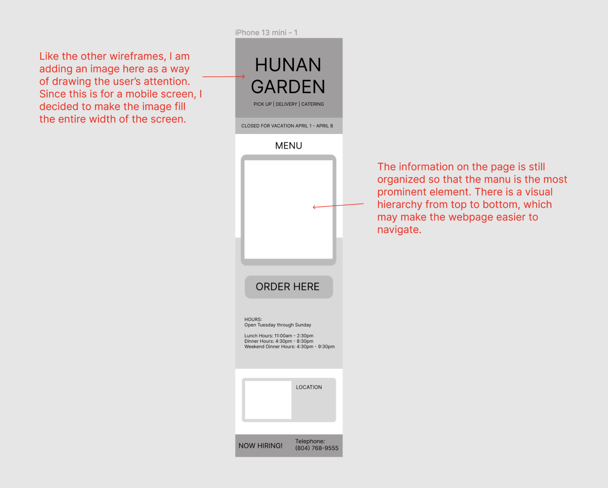

Hunan Garden Redesign
a responsive redesign for the website of my family's Chinese restaurant
role
UI/UX Design
Development
timeline
2024
---the problem---
Oftentimes, websites for local businesses are not created by designers. The website for my family's restaurant, Hunan Garden, falls into this category. I decided to redesign Hunan Garden's website, not just because it could use some touch-ups with regards to usability and accessibility, but also because it's exciting to have the chance to give back in some way to my parents and this restaurant that raised me.
The contents of the current website are a little scattered around the page, there are duplicate buttons for ordering online, and the site is not optimized for mobile screens. From talking to my parents, I learned they also wanted a more modern looking site to attract customers.
current site:
---sketches---
I did many sketches of potential layouts that could make the site easier to navigate.
From these sketches, I settled on a final sketch with a visual hierarchy to guide users in a logical order.
---low fidelity wireframes---
---the redesign---
I then created a style guide (with reds and yellows inspired by the fire theme of the original) for the site, which informed the high-fidelity wireframes and